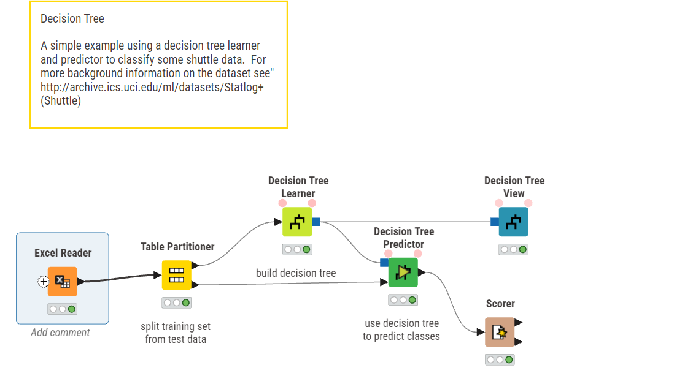
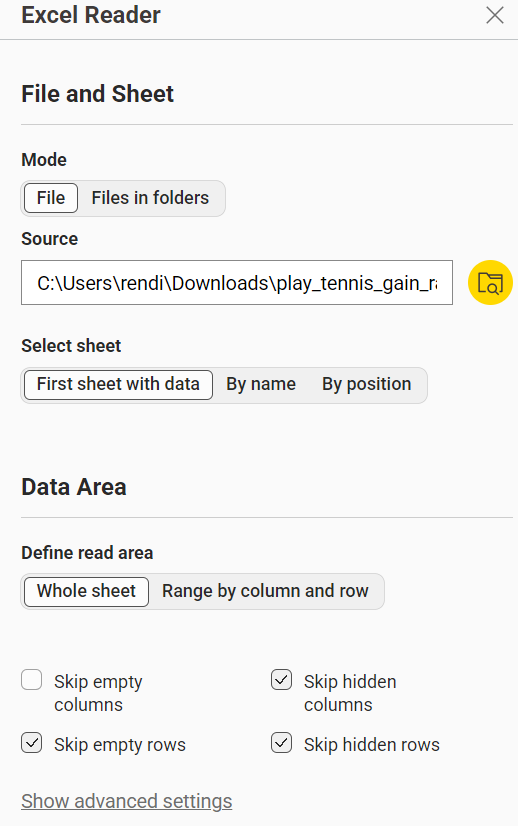
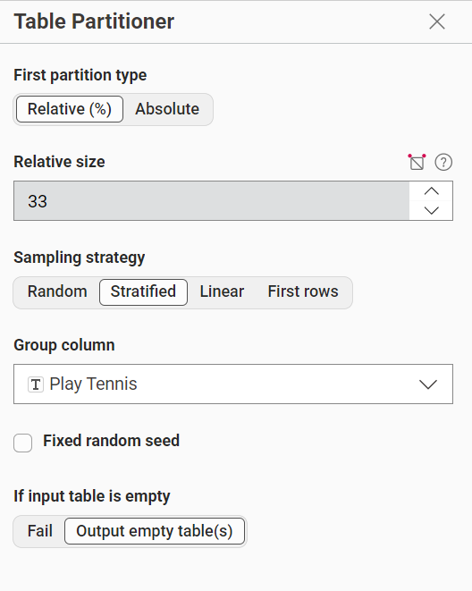
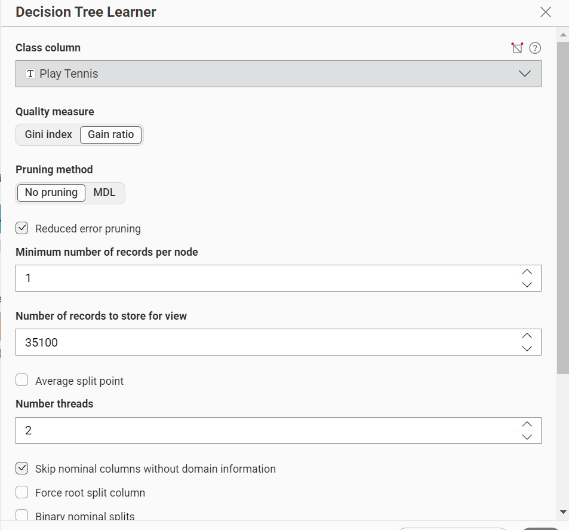
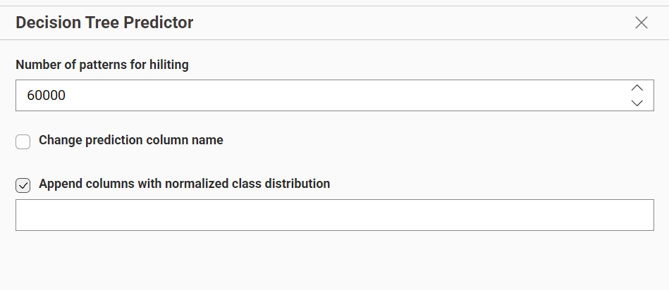
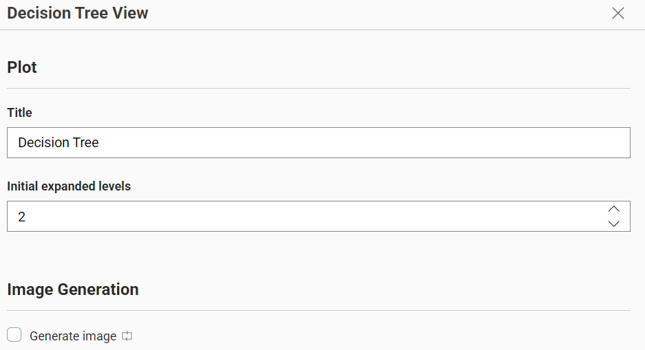
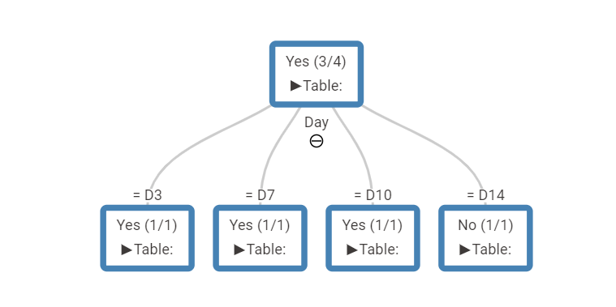
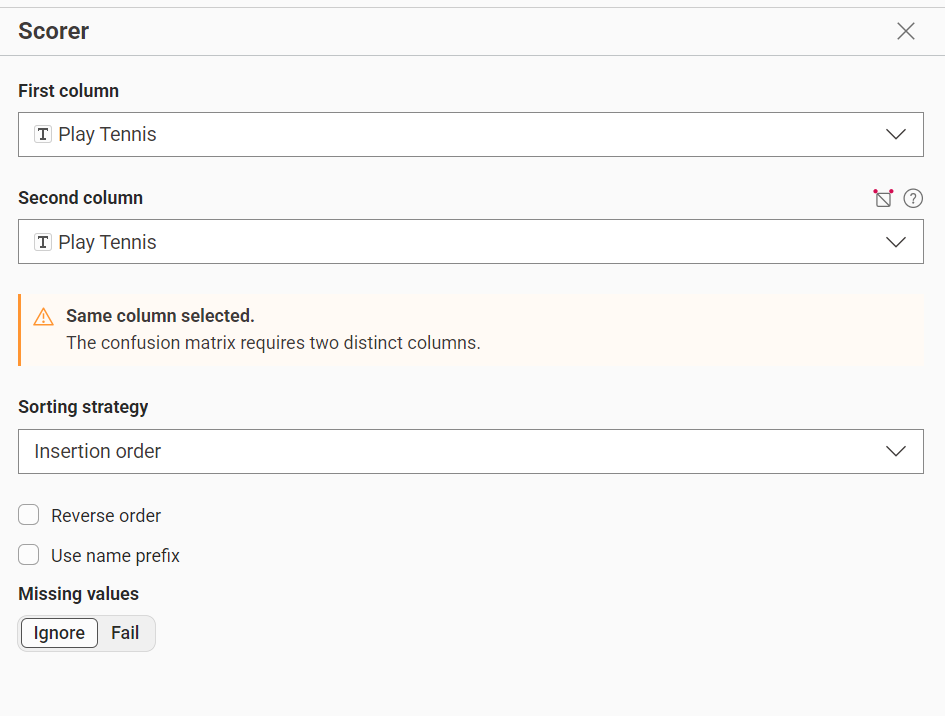

Decision Tree#
Pengertian Decision Tree 🌳#
Decision Tree adalah salah satu algoritma machine learning untuk klasifikasi dan regresi yang bekerja dengan cara membentuk struktur seperti pohon keputusan.
Model ini membagi data berdasarkan aturan (rule) dari fitur-fitur yang ada, sehingga menghasilkan cabang (branch) dan daun (leaf) yang berisi hasil keputusan.
Workflow Knime 📌#

Penjelasan Node Knime 📌#
Excel Reader#

Node Excel Reader digunakan untuk mengimpor data dari file Microsoft Excel (.xlsx) ke dalam workflow KNIME.
Fungsi utamanya:
Membaca dataset yang sudah disimpan dalam bentuk tabel Excel Mengubah data Excel menjadi format tabel KNIME agar bisa diproses lebih lanjut Menentukan sheet mana yang akan digunakan jika file memiliki beberapa sheet
Table Partitioner#

Table Partitioning berfungsi untuk memisahkan data menjadi:
Data training → digunakan untuk melatih model (misalnya Decision Tree Learner)
Data testing → digunakan untuk menguji atau mengevaluasi model
Pembagian ini penting agar model tidak hanya “menghafal” data, tetapi juga mampu melakukan prediksi pada data baru.
Decision Tree Learner#

Decision Tree Learner adalah node di KNIME yang digunakan untuk membangun model klasifikasi atau regresi berbasis pohon keputusan dari data training.
Node ini mempelajari pola hubungan antara fitur (input) dan target (label) dengan cara membagi data secara bertahap berdasarkan kondisi tertentu hingga membentuk struktur pohon.
Decision Tree Predictor#

Decision Tree Predictor adalah node di KNIME yang digunakan untuk melakukan prediksi kelas pada data baru atau data uji menggunakan model yang telah dibuat oleh Decision Tree Learner.
Node ini menerapkan aturan-aturan (IF–THEN) yang sudah terbentuk pada model untuk menentukan hasil klasifikasi dari setiap data.
Decision Tree View#

Decision Tree View adalah node di KNIME yang digunakan untuk menampilkan visualisasi model Decision Tree dalam bentuk struktur pohon yang mudah dipahami.
Node ini membantu pengguna melihat bagaimana model mengambil keputusan berdasarkan fitur-fitur yang digunakan.
Output :

Scorer#

Scorer adalah node di KNIME yang digunakan untuk mengevaluasi kinerja model klasifikasi dengan membandingkan hasil prediksi dengan nilai sebenarnya (actual).
Node ini sangat penting karena menunjukkan seberapa baik model (Decision Tree) dalam melakukan prediksi.
Kesimpulan#
Workflow Decision Tree di KNIME merupakan rangkaian proses untuk membangun, menguji, dan mengevaluasi model klasifikasi secara sistematis.
Proses dimulai dari Excel Reader untuk mengambil data, kemudian (jika diperlukan) dilakukan preprocessing agar data bersih dan siap digunakan. Setelah itu, data dibagi menggunakan Table Partitioning menjadi data training dan testing.
Selanjutnya, model dibangun menggunakan Decision Tree Learner, yang menghasilkan pohon keputusan berdasarkan pola dalam data. Model tersebut kemudian digunakan oleh Decision Tree Predictor untuk melakukan prediksi pada data uji. Hasil prediksi ini divisualisasikan melalui Decision Tree View agar mudah dipahami, dan akhirnya dievaluasi menggunakan Scorer untuk mengetahui tingkat akurasi dan performa model.